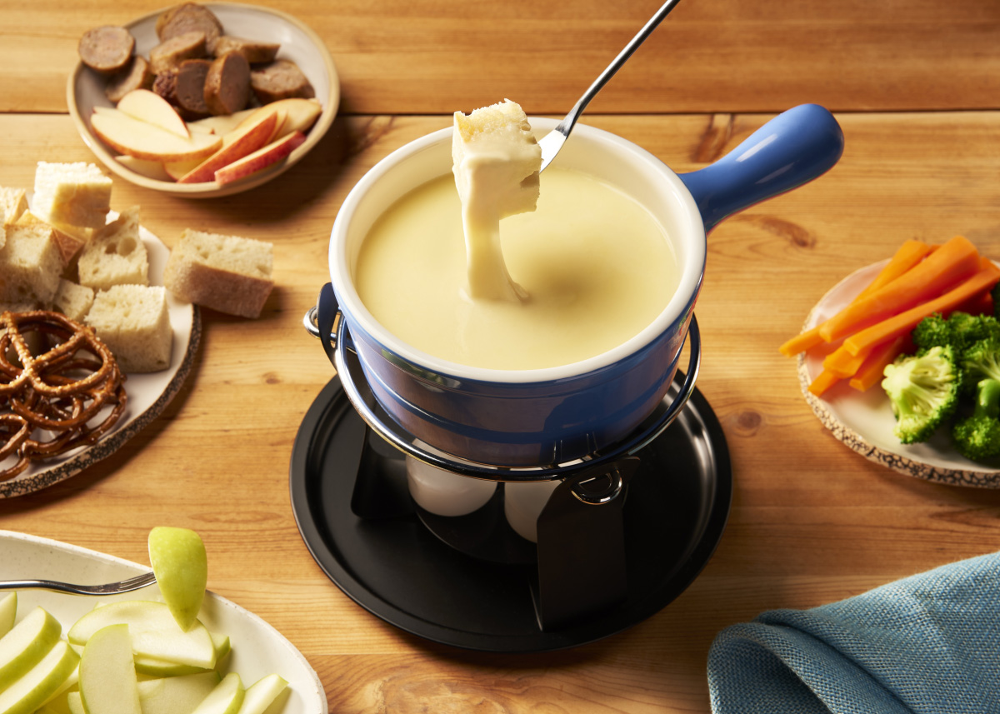

Go to:
Recipe 3: Fondue
The classic
- Difficulty: easy
- Preparation: 15 minutes
- Cooking: 15 minutes
- Serve for: 4 people
- Cost: medium
A fresh yet delicious fondue with your favourite cheese.

Ingredients:
- 2 ½ cups shredded Gruyere cheese
- 2 ½ cups shredded Emmental cheese
- 2 tablespoons cornstarch
- 1 clove garlic, halved
- 1 ½ cups dry white wine
- 1 big bread, cubed
- 10 cooked baby potatoes
- 1 cup cornichons
- 1 cup pickled pearl onions
Preparation:
- Combine Gruyère cheese, Emmental cheese, and cornstarch in a bowl. Mix until the cheese is evenly coated. Set aside.
- Rub the cut side of the garlic all over the inside of a fondue pot or heavy saucepan. Add wine and place over medium heat. Bring to a simmer, then gradually add cheese and cornstarch mixture. Stir with a spatula, gently stirring in a figure-of-eight motion, until all of the cheese is added and the fondue is smooth and homogenous. Reduce heat to medium-low if the fondue is boiling too vigorously.
- Immediately serve fondue, preferably over a warmer. If you used a saucepan on the stove to heat the fondue, you can carefully transfer the fondue to a fondue pot to serve.